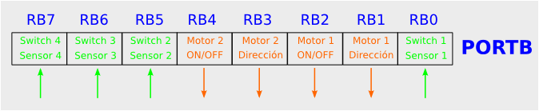

Necesitamos conocer cómo funcionan los motores y los sensores desde el punto de vista del programador. A este nivel no nos importan los detalles físicos, ni el tipo de motor, ni el tipo de sensores. Simplemente necesitamos conocer cómo podemos mover los motores y cómo leer los sensores para programar nuestros algoritmos de comportamiento del robot.
La tarjeta SKY293 se conecta a la Skypic a través del PUERTO B. Incluye cuatro sensores y dos motores. Para cada sensores sólo se necesita 1 bit y para los motores cuatro, dos para cada motor. Se accede a estos periféricos por los bits del puerto B que se indican en esta figura.
|  |
Los bits RB0, RB5, RB6 y RB7 hay que configurarlos como entradas para poder leer los sensores. Los bits RB1, RB2, RB3 y RB4 hay que configurarlos como salidas para poder mover los motores.
En la SKY293 hay 4 switches que permiten desconectar los sensores por si se quieren utilizar los bits del puerto B para otros propósitos. En la figura se muestra qué número de switch está asociado a qué sensor. Cuando los switches están conectado (posión ON, hacia abajo) los sensores están conectados al puerto B. En caso contrario están desconectados.
Los motores se controlan de manera digital. Para cada uno de ellos hay dos bits, uno que indica si el motor está encendido o apagado (ON/OFF) y el otro el sentido de giro.
Según las combinaciones de bits que enviemos al puerto B, cambiaremos el estado de los motores. Si las conexiones se han realizado como se ha descrito en la documentación del taller los valores que hay que enviar para mover el robot serán los mostrados en la siguiente tabla. Si se han hecho otras conexiones entonces los valores serán diferentes y el usuario los tendrá que buscar.
| Acción | RB4 | RB3 | RB2 | RB1 | Valor en PUERTO B |
|---|---|---|---|---|---|
| Adelante | 1 | 1 | 1 | 0 | 0x1C |
| Atras | 1 | 0 | 1 | 1 | 0x16 |
| Izquierda | 1 | 1 | 1 | 1 | 0x1E |
| Derecha | 1 | 0 | 1 | 0 | 0x14 |
| Parado | 0 | 0 | 0 | 0 | 0x00 |
Los sensores de infrarrojos CNY70 tienen incorporado un emisor y un receptor en el mismo encapsulado. Están constantemente emitiendo luz infrarroja. Si a poca distancia existe una superficie blanca, la luz se refleja y es captada por el receptor. Si la superficie es negra, absorbe la mayor parte de la luz y el detector no recibe nada.
En la siguiente tabla se resume el valor leido en el bit correspondiente del puerto B de la Skypic según el color detectado por el sensor:
| Color | Lectura del sensor (Bit del puerto B) |
|---|---|
| Blanco | 0 |
| Negro | 1 |
Para mover los motores y por tanto controlar el robot sólo hay que dar valores a los bits RB4, RB3, RB2 y RB1 del puerto B del PIC. Es decir, el robot se mueve escribiendo valores en el puerto B. Para leer los sensores, sólo hay que leer el puerto B y conocer en qué estado están los bits RB0, RB5, RB6 y RB7.
La manera de programar comportamientos sencillos del robot es el siguiente:
¡¡Con sólo saber cómo leer del puerto B y cómo escribir en él ya podremos implementar comportamientos sencillos!!!!